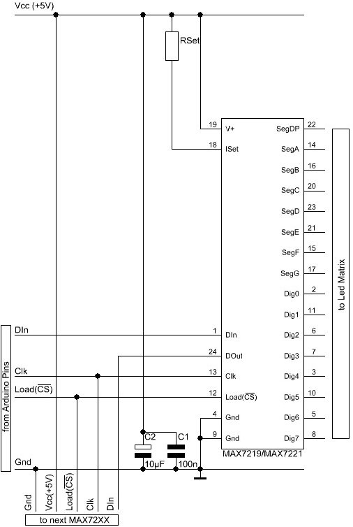
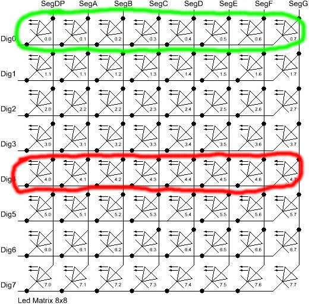

Hardware and schematics
The library supports two Maxim IC display drivers, the MAX7219 and the
MAX7221. Both circuits can drive up 64 individual Led's, or 7-segment
displays with 8 digits. The drivers implement a
SPI
compatible slave interface that can be controlled from the Arduino using
only 3 digital output pins. An datasheet for the MAX72XX is available
from the Maxim homepage. Both drivers
provide identical functions so I will use the generic term MAX72XX for
the MAX7221 and the MAX7219. Both chips are still in production as
of March 2014.
This section of the documentation focuses on building the external hardware, and should be seen as supplement to the original datasheet . For a basic understanding I suggest you have a look at the datasheet first and the read this section for Arduino specific information
Wiring
Here is a basic schematic for a MAX72XX, showing only the data
signals coming from the Arduino.

Besides the MAX72XX itself and the Leds there are only 3 external
components: two capacitors (C1; C2) and a resistor (RSet).
The capacitors are there to supress noise signals introduced through the
power-supply lines. By no means these 2 capacitors should be ommitted,
as it might lead to sporadic or permanent malfunctions. These types of
errors are really hard to track down. Both capacitors must be placed
as near as possible to the V+ and the Gnd pins of the MAX72XX.
The resistor RSet is responsible for setting an upper limit on the
current that is fed into the Leds. Selecting the correct resistor value
might not be trivial. There is an in-depth discussion
\<SelectRSet> on this later.
The MAX72XX has to be powered with +5V. For a single Led-matrix it
is possible to use the +5V supply from the Arduino-board. If you add
more than one matrix to the Arduino you will probably need an external
power-supply. More on this in section
Power supply issues \<PowerSupply>.
Arduino interface
The Gnd-Pins of the MAX72XX have to be connected to one of the
Gnd-Pins on the Arduino board. That makes both circuits work on the
same voltage-level. The positive power-supply pins (+5V/Vcc) can
directly be connected to the Arduino-board only for a limited number of
Led's.(See Power supply issues \<PowerSupply> for details.)
The three signal lines (DIn,CLK,Load(/CS)) have to be connected to
three digital outputs on the Arduino board. It depends on the software
which Arduino pins have to be used. For the exact pin-numbers you have
to refer to the software documentation of the library or the example
code on which you build your project. With most of the libraries for the
MAX72XX you are free to choose any pins you like.
If you read the datasheet for the MAX72XX you know that the drivers
can be cascaded by simply connecting the signal DOut from one chip to
DIn on the next chip. The signals Clk and Load(/CS) have to be
connected in parallel to each MAX72XX. There is no strict limit as to
how many drivers can be cascaded that way. But the SPI-interface is not
capable of any error checking on the transmitted data, so you are
already limited with the length of the cables that run from one
MAX72XX to the next one. If your cables have to be much longer than
10cm (4 inch) between each MAX72XX you ''might'' already run into
trouble.
Led-matrix
The MAX72XX can drive up an 8x8 matrix as shown in the schematic
below. The labels on the left and the top of the schematic refer to the
matching pins of the MAX72XX.

You can build your own matrix out of individual Leds, but there are also
pre-wired ones available. They can be directly connected to the
MAX72XX. Some are arranged as ''column cathode'' and some are ''column
anode'' (as in the diagram above). Either type will work but you must
connect the anodes to the Seg lines and cathodes to the Dig lines.
7-segment displays
A 7-segment digit is actually nothing more than 8 Leds (7-segments and
the dot) mounted in a special way. For 7-segment displays you must use
the ''common cathode''-type. There is no easy way to make a ''common
anode''-type seven segment display work with a MAX72XX.
The internal wiring of a ''common cathode'' type looks like this

If you look at the matrix schematic again that would resemble one of the
rows. The pin-labels on the 7-segment digits match the name of the pins
on a MAX72XX, with the common cathode pin wired to one of the Dig0-7
pins. In most shops you'll find only single 7-segment digits. But it is
very easy to build displays with more digits using the schematic below.

A complete schematic
A detailed schematic showing all the components is simply too large for
the computer screen. Click the image below for a schematic in print
resolution. It shows the complete wiring for 2 cascaded MAX72XX. One
drives a plain matrix and the other a 7-segment display.
MAX7219 vs. MAX7221
Since there are only minor differences between the MAX7219 and MAX7221 how do you know which one to choose? There are two things to consider here...
- Will I ever ever switch from the Arduino to some other type of controller for my Led matrix?
- The
MAX7221supports the standard SPI-protocol so you will have no trouble driving your Led matrix from some other type of controller. This might be another processor board or some type of USB device that can act as SPI-master. TheMAX7219in this regard deviates a little bit from the standards. But on the other hand all the Arduino software and libraries I have seen so far support both devices. If your answer is No here, take theMAX7219since it is usually a bit cheaper. - Does your project use the analog inputs of the Arduino? Do you do some kind of audio-processing?
- The
MAX7221was designed for reduced electromagnetic interference (EMI). EMI could lead to some jitter in the readings from the analog inputs of the Arduino or if the Led matrix is placed near some audio circuit it can introduce audible noise to the signal. So, if your project would go into categories like : audio gadget, audio levelmeter, (low-)voltage measurement, etc. than go for theMAX7221.
In all other cases you should be fine with the MAX7219.
Selecting RSet
The Arduino forum topics concerning the MAX72XX, often show that there
is a fair bit of uncertainty when it comes to selecting a value for the
resistor RSet. It is the single component that limits the current fed
into all the individual Leds. While some people seem to think of this
resistor as a way to control the brightness of the Leds, its real
purpose is to protect the MAX72XX and the Leds from exessive currents.
Setting the brightness of the display can and should be done from
software.
To find out the correct value for RSet you need the datasheet for the
MAX72XX and the datasheet for the Ledmatrix or 7-segment display
you're going to use.
From the datasheet of your Led's you will need to know two values
DC forward current- the maximum current that is allowed to go through the Led without damaging it in the long run.
Forward voltage- the voltage at which the Led operates.
While the Forward voltage is a fixed value which depends (mostly) on
the color of the Led, you have to limit the current going through the
Led with resistor RSet. Since DC forward current is a maximum value,
which is not be exceeded, you should settle for a slightly lower
current. Standard Led's and 7-segment displays are often rated with a
DC forward current of 25-30mA. Limiting to 20mA would make a good
choice.
With the information from the Led's datasheet we can now lookup the
resulting value for resistor RSet in the table below (which I copied
from the MAX72XX datasheet):
Table of the Leds Forward voltages vs. Forward current
| ISeg | 1.5V | 2.0V | 2.5V | 3.0V | 3.5V |
|---|---|---|---|---|---|
| 40mA | 12.2kΩ | 11.8kΩ | 11.0kΩ | 10.6kΩ | 9.69kΩ |
| 30mA | 17.8kΩ | 17.1kΩ | 15.8kΩ | 15.0kΩ | 14.0kΩ |
| 20mA | 29.8kΩ | 28.0kΩ | 25.9kΩ | 24.5kΩ | 22.6kΩ |
| 10mA | 66.7kΩ | 63.7kΩ | 59.3kΩ | 55.4kΩ | 51.2kΩ |
Here is an example: I have a 5x7 dots bright red Led matrix. The
datasheet states a Forward voltage of 2.0V. The DC forward current
is limited to 25mA. I'll settle for 20mA to stay a bit away from the
absolute limits. From the table above, the correct value for RSet
would be 28.0k Ω. You might have trouble finding that exact value in
shops, but it is always safe to go for higher values. More common values
would be 30k Ω or 33k Ω. The Leds will look a bit dimmer with these
values, but since it affects all the Led's in the matrix in the same
way, you will probably not even notice the difference. It also reduces
the supply current which is good news if your project runs on batteries.
Mixing Leds of different colors in a matrix is not really recommended
with the MAX72XX. There is only one resistor RSet that limits the
current for all the Leds. After you have looked all the different
resistors required by your Led colors you will have to settle for the
highest value. The brightness of the Leds with different colors will not
really match, so it's a ''trial and error'' thing finding the right
Leds.
Power supply issues
Now that we know how much current is going through one Led in the matrix, the next thing you might ask yourself is : How much current will the whole matrix draw from the power supply?
This really depends on the number of Leds which are lit in a '''row''' of the matrix at the same time. Let's look at the schematic of the Led matrix again. A row is made of 8 Leds the connected cathodes (two of them are marked in the schematic).

Internally the MAX72XX multiplexes the rows of the matrix.
Multiplexing means : The drivers switches between the rows of the matrix
very fast (about 800 times a second). That gives the impression all the
Leds are constantly on, while in reality they just flicker very, very
fast. The big advantage of this trick is that at every single point of
time no more than 8 Leds (one row) are lit. The maximum current that a
single matrix will ever demand is 8 times the current you have set with
resistor RSet (+ some 10mA for the MAX72XX itself).
In the example from section Select RSet \<SelectRSet> we choose a value that limits the Led current to 20mA. If our software now lights up all the 64 Leds in the Matrix at the same time, we still have to supply only 170mA, because of multiplexing.
PeakCurrent=(8 x LedCurrent) + MAX72XX-Supply
PeakCurrent=(8 x 20mA) + 10mA = 170mA
If your code never drives more than let's say 4 of the Leds in any of the rows, you will consequently have to supply only half the current.
Powering the Leds from the USB-port
Depending on the type of USB-hub you're using, there are different limits as to how much current can be drawn from a single USB-port.
- The root hub
- This is the USB-hub on your computer. On a desktop machine it will deliver up to 500mA on every USB-port. Some notebooks implement power saving strategies that limit the maximum current to 100mA as soon as it is unplugged from mains and runs on batteries.
- External self-powered hub
- This kind of USB-hub brings its on power-supply unit. Like the root hub, you can draw 500mA from each port. Some of these self-powered hubs supply the current, even when your computer is turned off or you unplug the hub itself. But sadly this is often not even mentioned in the datasheet of the hub. I have 3 self-powered hubs. One switches the USB-ports off when my machine shuts down or I unplug the hub. The other two don't care about this, the 5V supply on the USB-port is always alive.
- External bus-powered hub
- These hubs don't bring their own power-supply and therefore they will deliver not more than 100mA per USB-port. This type of hub is not really suitable for any Ardunino project with external hardware to be powered from USB.
Of the three, only the root and self-powered hubs that supply up to 500mA are recommended. As was said before the actual current your hardware draws depends very much on the software you write.
Here is the worst-case scenario: There are times when all 64 Leds are on
at the same time and you selected resistor RSet that allows a current
of 20mA per Led. That will add up to a maximum current of 170mA per
matrix. With two of these matrices you're at 340mA. Now add another 40mA
for the arduino itself and you'll end up with 380mA. There is not enough
headroom for adding third matrix in this case.
But if you light up only a single Led at any time, your maximum current
is at 30mA. You can easily drive 15 MAX72XX and the Arduino from a
500mA hub.
Powering the Leds from batteries
Its hard to come up with numbers as to how long a battery will last. So here are just a few guidelines:
- Every Led that is not lit saves power.
- Selecting a higher value for
RSetmakes the display dimmer, but also reduces the current going through the Leds. - Use software features to reduce the brightness of the matrix to a tolerable minimum.
Here is the result from a test I did with a 9V battery that had a
capacity of 625mAH and a Led matrix on which 32 out of the 64 Leds where
lit all the time. The whole setup with the matrix and the Arduino (model
NG Rev.C) consumed a static current of 78mA. After about 55 minutes all
the Leds went off. The voltage on the battery had dropped below 7.4V. By
that time the Arduino was still running, but the MAX72XX was not able
to drive the Leds any more.
 Project on Github
Project on Github E-Mail
E-Mail{kind=link}